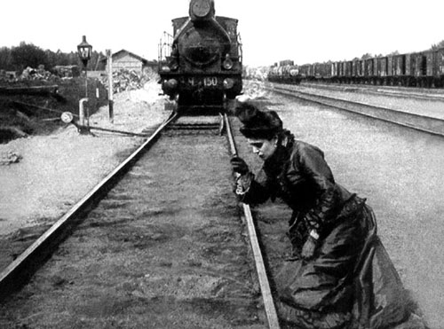

<!DOCTYPE html>
<html prefix="og: http://ogp.me/ns#">
  <head>
    <meta charset="utf-8"/>
    <meta name="viewport" content="width=device-width, initial-scale=1.0"/>
    <meta property="og:url" content="http://chernotrop.reviews/how-dare-karenina"/>
    <meta property="og:type" content="article"/>
    <meta property="og:title" content="Время идёт, «Анна Каренина» по-прежнему не оставляет нас равнодушными"/>
    <meta property="og:description" content="Правда, про Левина все потихоньку забывают."/>
    <meta property="og:image" content="http://chernotrop.reviews/img/how-dare-karenina-og.jpg"/>
    <meta property="og:image:width" content="1200"/>
    <meta property="og:image:height" content="600"/>
    <link href="https://fonts.googleapis.com/icon?family=Material+Icons" rel="stylesheet"/>
    <link rel="stylesheet"/><!-- Yandex.Metrika counter --> <script type="text/javascript" > (function(m,e,t,r,i,k,a){m[i]=m[i]||function(){(m[i].a=m[i].a||[]).push(arguments)}; m[i].l=1*new Date();k=e.createElement(t),a=e.getElementsByTagName(t)[0],k.async=1,k.src=r,a.parentNode.insertBefore(k,a)}) (window, document, "script", "https://mc.yandex.ru/metrika/tag.js", "ym"); ym(56951962, "init", { clickmap:true, trackLinks:true, accurateTrackBounce:true, webvisor:true, trackHash:true }); </script> <noscript><div></div></noscript> <!-- /Yandex.Metrika counter -->
    <title>Время идёт, «Анна Каренина» по-прежнему не оставляет нас равнодушными</title>
  <link href="./css/style.bundle.css" rel="stylesheet"></head>
</html>
<body class="body_light">
  <header class="header header_dark">
    <div class="header__logo">
      <div class="logo logo_dark"><a class="logo__link" href="/">ЧЕРНОТРОП</a></div>
    </div>
    <div class="header__menu" id="modeValue"><a href="menu.html">
        <svg xmlns="http://www.w3.org/2000/svg" width="24px" height="24px" viewBox="0 0 24 24">
          <path d="M0 0h24v24H0z" fill="none"></path>
          <path class="icon_white" d="M3 18h18v-2H3v2zm0-5h18v-2H3v2zm0-7v2h18V6H3z"></path>
        </svg></a>
    </div>
  </header>
  <article class="article">
    <div class="article__header">
      <h1 class="article__headline">«Анна Каренина» Льва Толстого</h1>
      <p class="article__description">Время идёт, роман по-прежнему не оставляет читателя равнодушным. Про Левина потихоньку забывают.</p>
    </div>
    <div class="article__content">
      <div class="article__content-row">
        <div class="article__content-left">
          <p>
             В рубрике «<a href="how-dare.html"><span>Да как ты смеешь?!</span></a>» самоучка и профан Артём Сошников бесстыдно скрещивает русскую классику с современностью. В первом выпуске — роман Льва Толстого «Анна Каренина», который по-прежнему остаётся великим, но теряет свою многогранность.</p>
          <p>⚒︎</p>
          <p>На днях вручили очередную премию НОС — и, конечно же, эксперты опять упомянули о прозе и современности. Анна Наринская рассказала, что она уже больше десяти лет является страшным болельщиком входа реальности в литературу:</p>
          <blockquote>«Меня всегда страшно расстраивало в современной мне русской литературе, что она пыталась абсолютно изолироваться от реальности. Ещё лет двенадцать назад можно было сказать, что ни один русский пишущий человек в окошко не выглядывает».</blockquote>
          <p>Уж кто-кто, а «Чернотроп» протестовать против реализма в литературе не будет. Но справедливости ради стоит отметить, что взаимоотношения писателя и современности несколько сложнее.</p>
          <p>Посмотрим на примере: взялся ты, допустим, за повесть о телеграм-канале. Прошло два года. От телеграм-каналов все устали, люди посообразительнее перескочили на подкасты.</p>
          <p>Каких-то два года — и актуальная повесть уже стала историей. Примерно то же самое происходит сейчас с трендами, блогерами, музыкальными группами, сериалами. Ну вот что сейчас происходит с «Пошлой Молли»? Всем наскучила, записывает клипы с экс-солистками «Серебра». А помните, Дружко когда-то собирал у школоты миллионы просмотров? Маликов песенки пел. И так далее.</p>
          <p>Когда старшие товарищи призывают нас писать о современности, стоит призадуматься.</p>
          <p class="article__content-main-thought">В разгоняющихся двадцатых лучше писать о вечном в антураже современности. И вечное, и антураж не устаревают.</p>
          <p>Главный тому пример, ориентир и хэдлайнер — роман Льва Толстого «Анна Каренина». Больше ста сорока лет прошло, а интерес к нему не спадает. Если обмолвишься в литературной компании, что читаешь «Анну Каренину», люди тут же зададут кучу вопросов или, что ещё лучше, поспорят между собой.</p>
        </div>
        <div class="article__content-right">
          <figure>
            <figcaption>Кадр из фильма «Анна Каренина», 1914.</figcaption>
          </figure>
        </div>
      </div>
      <div class="article__content-row">
        <div class="article__content-left">
          <p>Единого мнения о романе не существовало и при жизни Толстого, тон и ход рецензии зависели от политической направленности журнала или газеты, которые эту рецензию издавали.</p>
          <p>Либералы и народники критиковали воспевание помещичьего уклада,  консерваторы обличали гнилые нравы высшего света. Нейтральные читатели,  вскормленные французскими любовными романами, зачастую игнорировали  линию Левина и замечали только треугольник Анны, Вронского и Каренина,  значительно упрощая замысел и драматургию (на что ещё при жизни писателя жаловался литературный критик Николай Страхов):</p>
          <blockquote>«Так я уже читал вчера, что Каренина решается на самоубийство, <i>убедившись, что Вронский любит другую</i>. Вы видите, они иначе не могут понять, да и то, вероятно, по преданию,  по французским романам, а не по чувству своего собственного сердца».</blockquote>
          <p>Оттого интереснее узнать, как воспринимают роман сегодня. И споры в этом помогают.</p>
          <p>На первый план ожидаемо вышла феминистическая повестка. Как и социалисты того времени, Толстого критикуют за воспевание патриархата,  скептическое отношение к женскому вопросу и кондовый морализм.</p>
          <p>Но собрать единодушное «FFUUU» из калейдоскопа мнений не получается. Мы  живём в эпоху раннего индивидуализма, мнения об «Анне Карениной» вполне  могут отличаться даже внутри одной общности.</p>
          <p>Для нескольких читателей <a href="http://ttttt.me/blacktrope"><span>нашего канала</span></a> Анна так и не стала отрицательным персонажем. Она, как и Каренин — заложница общества и религиозных норм XIX-го века, где развод становится непреодолимым препятствием.
          </p>
          <p>В 2019-м году ситуация не стоит и выеденного яйца: Анна подаёт на  развод, судья оставляет сына с мамой, богатый и влиятельный Каренин находит себе инстаграм-модель и уезжает с ней отдыхать в Дубай. Всё.</p>
          <p>Ещё и материнский капитал получат.</p>
          <p>Современная интерпретация романа, написанная феминисткой, исключала бы из формулы великодушие Каренина. Муж-тиран, путинист и чинуша, не  отдавал бы ребёнка Анне, запрещал ей видеться с сыном и вставлял палки в колёса Вронскому — оунеру русско-американского стартапа и умеренному  стороннику Навального.</p>
          <p>Но вторую «Анну Каренину» не напишешь, так что нам остаётся лишь  наблюдать, как доживающие свой век религиозные условности, светское  лицемерие и стадное чувство гонят Анну под поезд.</p>
          <p>За бурей обсуждений и фантазий кроется ещё одна примета времени.  Спорщики чаще всего не трогают Левина и его экзистенциальный кризис.  Дауншифтинг лет пять как умер, а за экзистенциальный кризис  консервативного бизнесмена у нас отвечает Андрей Рубанов.</p>
          <p>Может быть, когда-нибудь, лет через тридцать, чаша весов склонится в  другую сторону и люди начнут спорить о поступках и метаниях Левина, а  Каренины отойдут на второй план. Пока же современные читатели не считают эту линию острой.</p>
          <p>Эмансипация женщин куда острее.</p>
          <div class="article__content-author">⚒︎<br/><a href="http://soshnikov-writing.art/" target="blank"><span>Артём Сошников</span></a></div>
        </div>
      </div>
    </div>
  </article>
<script type="text/javascript" src="./js/bundle.js"></script></body>